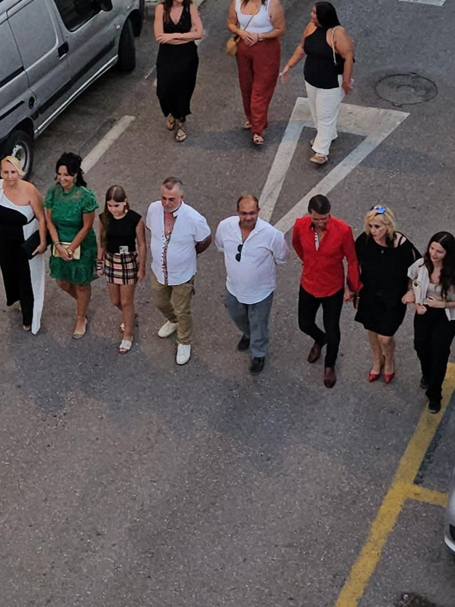
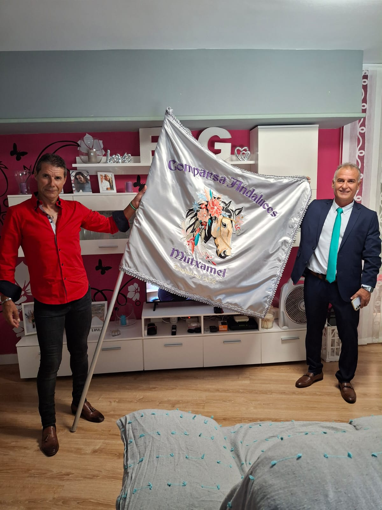
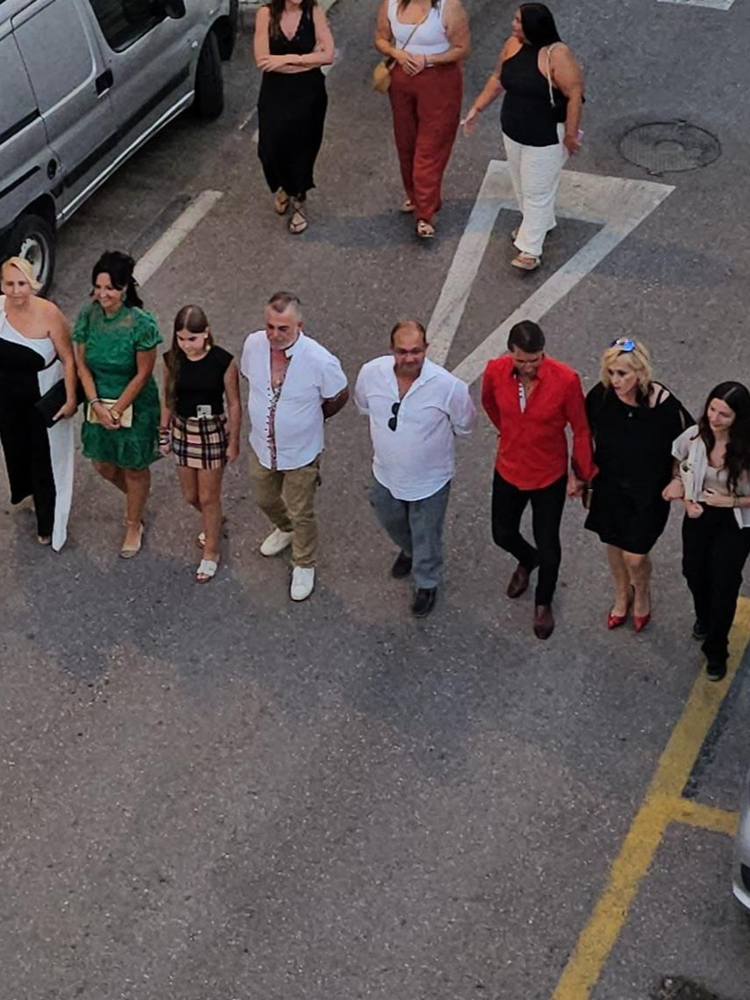
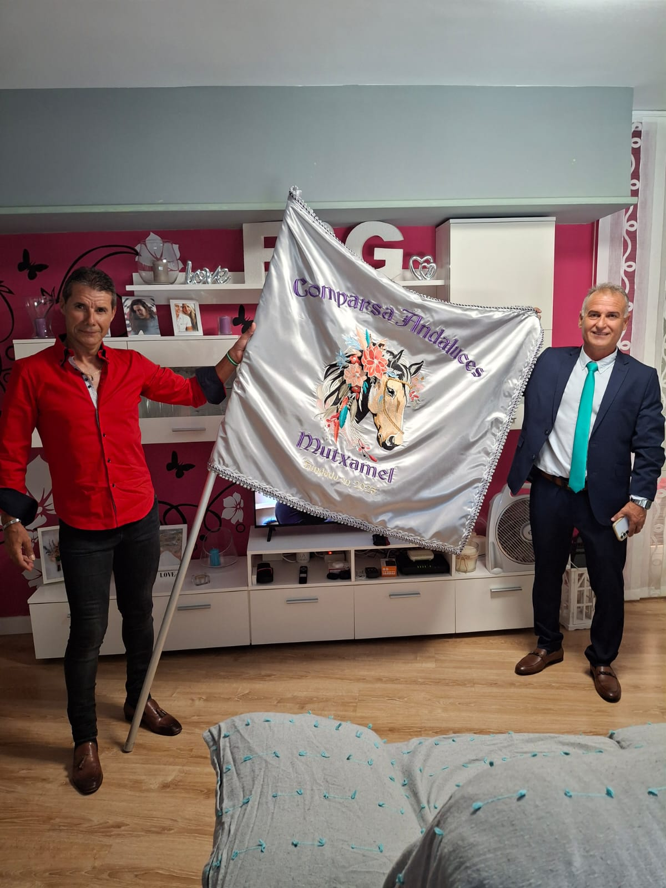

Galería - Actos intermedio y preparativos 2025
Comparsa Oficial
Aquí mostramos nuestra primera asamblea en el casal fester. Después de tanto tiempo, conseguimos ser comparsa oficial y por ende nuestro logo aparecerá ahí colgado junto con los del resto de comparsas.
Paellas en los Zegries
Nuestra comparsa, al igual que el resto fue invitada a un concurso de paellas en la barraca de los Zegries. En este evento acudimos un grupo de miebros de Andaluces que pudimos socializar con el resto de comaparsas y entre nuestros propios integrantes.
Presentación de cargos Festeros
En la presentación de los cargos festeros vivimos muchas emociones. Se mostró al pueblo por primera vez el traje oficial de los hombres y nuestra bandera. Además, dos de nuestros componentes de la comparsa pudieron desfilar en rambla de manera ofical, el presidente y el abanderado. Aunque no fueron los únicos que lo hicieron. Ya que de manera extraoficial un pequeño grupo de la comparsa no pudo contener sus ganas de desfilar y se pusieron tras la banda de música.
 



Procesión del Salvador
En esta procesión pudimos volver a ver desfilando el traje oficial de los hombres y nuestra bandera. Con la novedad de ver en rambla el traje oficial de las mujeres, ambos trajes son espectaculares y representan a la perfección nuestra esencia. Siendo maravillosos tanto juntos como separados. Para la comparsa fue un honor encabezar la procesión del Salvador
Preparación de la barraca
Las fiestas están a punto de llegar y la comparsa Andaluces está preparandolo ya todo. Entre otras cosas, estamos preparando el lugar donde estará nuestra barraca y para ello varias personas de la comparsa ayudan a la limpieza y montaje de esta.
Preparación de la retreta
Otros detalles que estamos ultimando son los disfraces para la retreta. Para ello, algunas personas se encuntran haciendo los difraces de la comparsa, los cuales están quedando genial.